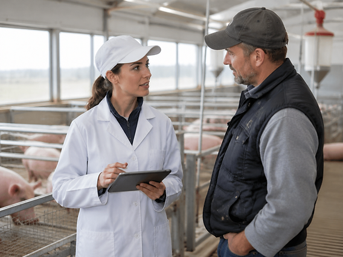
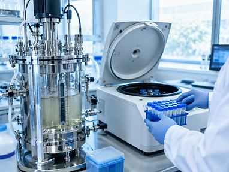
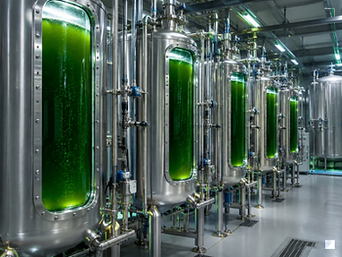
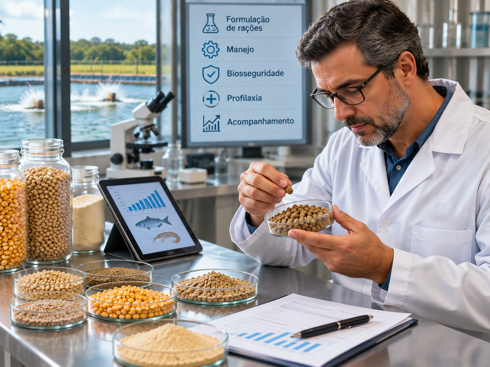
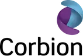
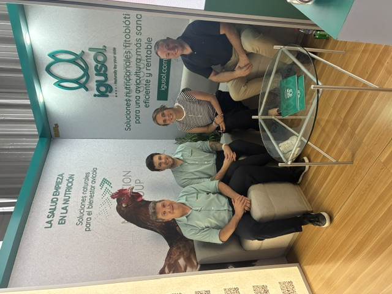

IGUSOL
Aditivos Naturais
Soluções baseadas em tecnologias de aditivos naturais para nutrição animal.
Conheça a solução →Tecnologia, inovação e nutrição de alta performance para a produção animal.
A UNIAVE combina conhecimento técnico, agilidade e soluções nutricionais para ajudar produtores a alcançar maior produtividade, eficiência e rentabilidade.
A UNIAVE SP atua no segmento de nutrição animal, oferecendo soluções que integram tecnologia, conhecimento técnico e parcerias especializadas.
Constituída em setembro de 2019, a empresa nasceu com o propósito de contribuir para o desenvolvimento da produção animal por meio de produtos, serviços e informações que apoiem as decisões do produtor.
Com agilidade no atendimento, qualidade logística e foco nas necessidades de cada cliente, a UNIAVE trabalha para transformar conhecimento em resultados.
Conheça a UNIAVE
Um portfólio de tecnologias e produtos desenvolvidos para atender às necessidades da produção animal, com o suporte de parceiros especializados.
Ver todas as soluções
Soluções baseadas em tecnologias de aditivos naturais para nutrição animal.
Conheça a solução →
Tecnologias enzimáticas voltadas ao aproveitamento de nutrientes na alimentação animal.
Conheça a solução →
Solução à base de DHA de microalgas para aplicações de enriquecimento nutricional na produção animal.
Conheça a solução →Nossas soluções atendem diferentes segmentos da produção de proteína animal, respeitando as características e necessidades de cada sistema produtivo.

A atuação da UNIAVE vai além da disponibilização de produtos. A empresa busca compreender as necessidades de cada operação e contribuir com soluções adequadas à realidade do produtor.
O suporte técnico pode envolver avaliação de matérias-primas, formulação e otimização de rações, manejo, biosseguridade, profilaxia e acompanhamento das soluções aplicadas.
A atuação é realizada de acordo com as necessidades de cada cliente, em conjunto com o conhecimento técnico dos parceiros.
Conheça nossa atuaçãoTrabalhamos com empresas especializadas em tecnologias e soluções para nutrição animal.
Soluções em aditivos naturais para nutrição animal.
.png)
Tecnologias e produtos para nutrição animal, incluindo soluções enzimáticas.

Tecnologias e produtos para nutrição animal, incluindo soluções enzimáticas.
Informação, tecnologia e conhecimento técnico são fundamentais para o desenvolvimento da produção animal.
Acompanhe conteúdos sobre nutrição, inovação, produtividade e tendências do setor.
Acesse nossos conteúdos
Entre em contato com a UNIAVE e conheça nossas soluções para nutrição animal.